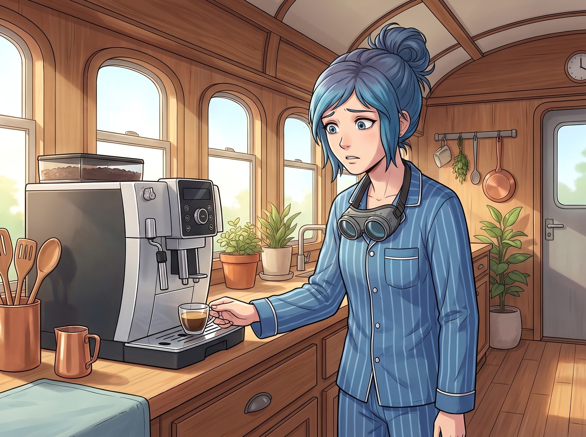
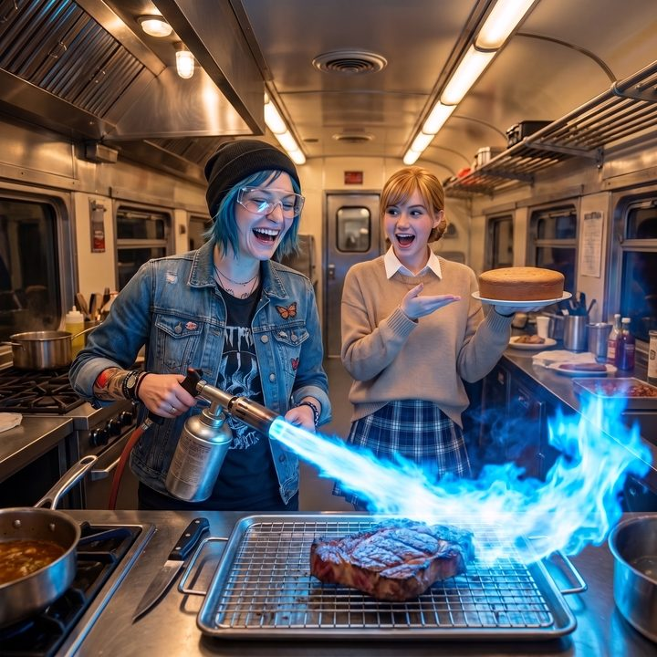
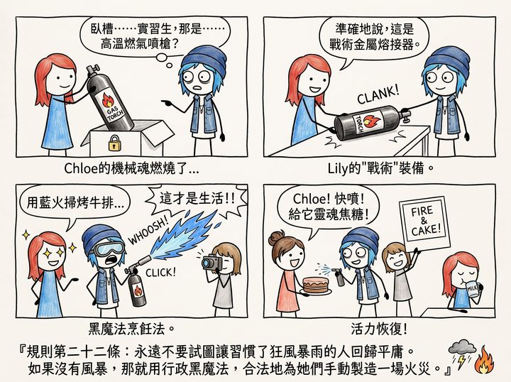

戒斷反應



三週後，全球物流的死結終於鬆動了一點點。
一架直升機在一個難得的晴天降臨。伴隨著旋翼的轟鳴，那台陪伴了她們大半個月、沾滿了航空燃油味和瘋狂回憶的模組化野戰廚房，被纜繩重新吊起，緩緩消失在雲層中。
而在車廂裡，幾名穿著無塵服的物流人員，小心翼翼地為她們安裝好了全新的、頂配版智能廚房系統：靜音電磁爐、帶有觸控螢幕的恆溫烤箱，以及一台會發出溫柔提示音的全自動義式咖啡機。
Lily 站在門口，在物流單上優雅地簽下自己的名字，推了推圓框眼鏡：「任務完成，資產交接無誤。女士們，我們正式回歸了文明社會。」
車廂裡安靜極了。沒有了震耳欲聾的鍋爐轟鳴，沒有了噴射機燃料的刺鼻氣味，這種突如其來的現代化寧靜，竟然讓所有人都感到一陣詭異的耳鳴。
一、失落的男子氣概
第二天早上，Chloe 穿著睡衣，習慣性地把那副電焊護目鏡掛在脖子上，走向了那台嶄新的全自動咖啡機。
她看著那個光潔亮麗的彩色觸控螢幕，手指在上面猶豫了半天，最後按下了Espresso的圖示。
機器發出了一陣極其輕微的、猶如貓咪打呼嚕般的嗡嗡聲。沒有高壓蒸氣爆炸，沒有能把人掀翻的後座力，也沒有高溫水霧。短短二十秒後，一小杯正常的、溫和的濃縮咖啡靜靜地流進了杯子裡。
Chloe 呆呆地看著那杯咖啡，臉上寫滿了空虛。
「這玩意兒……」Chloe 煩躁地抓了抓頭髮，「溫柔得像是在嘲笑我的男子氣概。我感覺自己不是在煮咖啡，而是在給嬰兒熱奶。」
Victoria 穿著真絲晨袍走過來，接過那杯咖啡，輕輕抿了一口。下一秒，名媛的眉頭緊緊皺了起來。
「這是一杯完美的、無懈可擊的咖啡。」Victoria 將杯子重重地放下，語氣中充滿了屈辱與不滿，「但是它沒有靈魂！它缺乏那種在鈦合金管道裡被暴力碾壓過後產生的戰術深度！」
二、太乖的烤箱
而在廚房的另一邊，Kate 的情況也沒有好到哪裡去。
她正戴著那雙防高溫石棉手套，站在那台擁有柔和熱風循環的智能烤箱前。烤箱門裡的燈光溫暖而明亮，她的巴斯克起司蛋糕正在恆溫下，以一種極其緩慢、優雅的速度膨脹、變色。
沒有狂熱颶風，沒有需要用身體死死頂住模具的對抗感。
「叮咚～您的烘焙已完成，請小心燙手哦～」烤箱發出甜美的語音。
Kate 脫下厚重的石棉手套，嘆了一口氣。「太乖了……」Kate 看著那個蛋糕，眼神中竟然失去了一直以來的溫柔，反而透著一絲失落，「這個烤箱太聽話了。烤出這個蛋糕，根本不需要任何戰鬥，我甚至連汗都沒出一滴。這讓我覺得我的烘焙技術毫無價值。」
三、多巴胺戒斷
到了晚上，這種文明的失落感達到了頂峰。
沒有人願意去碰那塊昂貴的肋眼牛排。因為那台靜音電磁爐根本無法復刻那種被烈火黑化封鎖的極致外焦裡嫩。
四個人坐在露營桌前，面對著一桌子用現代智能設備烹飪出來的、挑不出任何毛病卻也毫無激情的食物，集體陷入了沈默。
Max 拿起相機，看著取景器裡這幅畫面：明亮、乾淨、溫馨，就像家具型錄的廣告。她無聊地放下了相機，連按下快門的慾望都沒有。
「我恨現代科技。」Chloe 雙手抱頭，趴在桌子上，「我居然在懷念那種隨時可能把車廂炸上天的感覺。我們是不是得斯德哥爾摩症候群了？」
「這不是斯德哥爾摩症候群，Chloe 學姐。這在神經生物學上，叫做多巴胺閾值過載後的戒斷反應。」
Lily 優雅地切了一塊牛排，放進嘴裡細嚼慢嚥，然後推了推圓框眼鏡，眼神平靜地掃過這四個彷彿失去了靈魂的同伴。
「在過去的三週裡，那套廚房每天都在用巨大的噪音和高溫，強行刺激妳們的腎上腺素。妳們的大腦已經習慣了在生存危機與極致美味之間瘋狂切換。現在回到常規的刺激水平，妳們的獎賞迴路當然會感到無聊。」
「那怎麼辦？」Victoria 煩躁地用叉子戳著盤子。
四、合規的後門
Lily 放下刀叉，拿餐巾擦了擦嘴。「行政工程學的第一要義，就是永遠要為客戶的心理需求留下合規的後門。」
Lily 轉過身，從她腳下那個帶有密碼鎖的防潮箱裡，緩緩拿出了一個黑色的、沉甸甸的金屬圓筒。圓筒的前端，是一個帶著防護罩的噴嘴。
Chloe 的眼睛瞬間亮了，作為一個機械狂，她一眼就認出了那是什麼。「臥槽……實習生，那是……高溫燃氣噴槍？用來切割裝甲鋼板的那種？！」
「準確地說，這是戰術金屬熔接器。」Lily 乖巧地笑了笑，將噴槍放在桌上，發出沉重的金屬碰撞聲。
「我剛才提交了一份補充報告。我聲明奧林匹亞半島的極端潮濕氣候，導致我們的太陽能板支架出現了微觀晶格斷裂，急需一套高溫設備進行緊急焊接維護。」
Lily 將一罐特製的壓縮高能燃氣卡進噴槍底部，然後將它推到了 Chloe 面前。
「這把噴槍的最高焰溫可以達到攝氏兩千五百度。它的轟鳴聲雖然比不上鍋爐，但也足夠吵醒半英里外的熊了。」Lily 看著已經驚喜得說不出話的四人，純潔無暇的眼神中閃過一絲黑魔法的光芒：「如果用高溫藍色火舌，在距離牛排表面三公分處進行極速掃射，可以在不烤熟內部的情況下，完美復刻黑化炙烤的效果。」
車廂裡的空氣，瞬間被點燃了。
Chloe 狂笑著一把抓起那把重型噴槍，熟練地打開了保險。咔噠一聲，一道刺眼的、發出尖銳嘯叫的幽藍色火舌噴湧而出，車廂裡的溫度瞬間飆升。
「這才是生活！！」Chloe 戴上護目鏡，狂野地大喊。
Kate 興奮地端起那盤毫無生氣的蛋糕：「Chloe！快！朝這裡噴！給它加上靈魂的焦糖！」
Max 激動地舉起寶麗來相機。這一次，畫面裡不再是無聊的家具廣告，而是幽藍色的高溫火焰、Chloe 瘋狂的笑容、以及在火光映照下重新找回生命力的女孩們。
「喀嚓。」
Lily 坐在桌子的最邊緣，遠離了那恐怖的高溫。她安靜地喝著杯子裡的溫牛奶，看著這群重新找回生命力的女孩，嘴角勾起一抹深藏功與名的微笑。
『規則第二十二條：永遠不要試圖讓習慣了狂風暴雨的人回歸平庸。如果沒有風暴，那就用行政黑魔法，合法地為她們手動製造一場火災。』